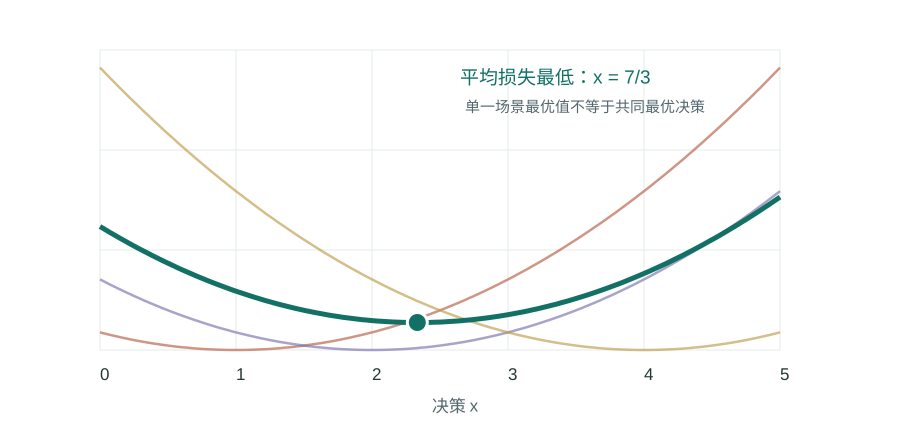

随机优化与确定性优化
同一个决策，在固定数据与不确定需求下可能产生不同的最优选择。关键不是随机算法是否“靠运气”，而是目标或约束是否依赖未知的随机结果。
一个发货决策，三种可能的需求
假设企业必须在真实需求揭晓前决定发货量 x。若实际需求为 D，暂以平方偏差 L(x,D)=(x−D)² 表示损失：发多和发少被对称惩罚。这是为了展示数学结构而设计的玩具成本，并非通用物流成本函数。
确定性优化把需求当成已知数。例如采用固定预测 D=2 时，最小化 (x−2)² 的答案就是 x=2。随机优化则把 D 看成有分布的随机变量，在决策时无法知道哪一个场景会发生。

把不确定性写进目标函数
若场景 D∈{1,2,4} 各以 1/3 的概率发生，那么在不知道 D 时，合理的风险中性目标是最小化期望损失 R(x)。决策 x 必须在场景揭晓前固定，不能对每个场景事后分别选择自己的最优值。
确定性与随机问题都可以使用确定性的数值算法求解。这里“随机”描述的是数据模型，不等于必须使用随机梯度下降；“确定性”也不保证问题简单。
为什么最优值是 7/3
平方损失有一个有用的恒等式：期望平方误差等于对期望的偏差平方加上需求方差。只要二阶矩有限，这个分解成立。
在三个等概率场景里，E[D]=(1+2+4)/3=7/3，Var(D)=14/9。因此 x*=7/3≈2.3333，最优平均损失 R*=14/9≈1.5556。若只用固定预测 D=2 选 x=2，再放进三场景里检验，其期望损失为 5/3≈1.6667，比随机模型的最优值高 1/9。
这个差异来自建模时使用的信息不同，不是比较了两种算法的优劣。
样本平均近似与 Monte Carlo
真实分布可能未知。若我们能从相同分布独立采样 D₁,…,Dₙ，可以用样本平均近似（SAA）构造 Rₙ(x)=Σ L(x,Dᵢ)/n。对当前平方损失，SAA 最优决策是样本均值。
有限样本均值不一定等于真实期望。独立同分布、有限期望等条件下，样本均值会随样本量增加而收敛；但若场景本身有偏、极端风险重要，或约束必须对每个情景都成立，仅靠最小期望可能不够。
观察候选决策的风险
移动 x，比较固定场景的损失、三场景的平均损失，以及理论最优值。初始显示 x=2，便于直接看到确定性预测带来的决策。
实时计算
三种可能需求分别为 1、2、4，各占三分之一概率。
用 Python 独立验证
下面的 Python 程序既验证有限场景期望的解析最优解，也使用固定随机种子给出 Monte Carlo 样本均值。它不是概率约束求解器，也不把一次随机结果写成可靠的统计结论。
"""Compare a deterministic forecast with a finite-scenario stochastic objective.
Uses the exact three equally likely scenarios (1, 2, 4); no external solver.
"""
from math import isclose
from random import Random
SCENARIOS = (1.0, 2.0, 4.0)
def loss(x: float, demand: float) -> float:
return (x - demand) ** 2
def scenario_risk(x: float) -> float:
return sum(loss(x, d) for d in SCENARIOS) / len(SCENARIOS)
def monte_carlo_mean(seed: int = 2026, size: int = 1000) -> float:
rng = Random(seed)
return sum(rng.choice(SCENARIOS) for _ in range(size)) / size
if __name__ == "__main__":
deterministic = 2.0
stochastic = sum(SCENARIOS) / len(SCENARIOS)
theoretical_risk = 14.0 / 9.0
print(f"fixed forecast decision: {deterministic:.6f}")
print(f"mean-squared-loss decision: {stochastic:.6f}")
print(f"minimum scenario risk: {scenario_risk(stochastic):.6f}")
print(f"fixed-seed Monte Carlo sample mean: {monte_carlo_mean():.6f}")
assert isclose(stochastic, 7.0 / 3.0)
assert isclose(scenario_risk(stochastic), theoretical_risk)
assert scenario_risk(stochastic) <= scenario_risk(deterministic)
assert scenario_risk(stochastic) <= scenario_risk(stochastic + 0.5)
assert 1.0 <= monte_carlo_mean() <= 4.0
模型边界与练习
- 风险偏好：最小期望平方损失不保证最差情景可接受。风险厌恶可以使用分位数、CVaR 或鲁棒目标。
- 两阶段决策：若需求揭晓后还允许补货或调拨，必须显式建模事后决策与成本。
- 变量约束：如果只能整箱发货，连续最优 x=7/3 还需要求解整数版本。
练习：将场景概率改为 P(D=1)=1/2，P(D=2)=1/4，P(D=4)=1/4。在平方损失下，新的最优发货量为 E[D]=2，最优期望损失为 3/2。